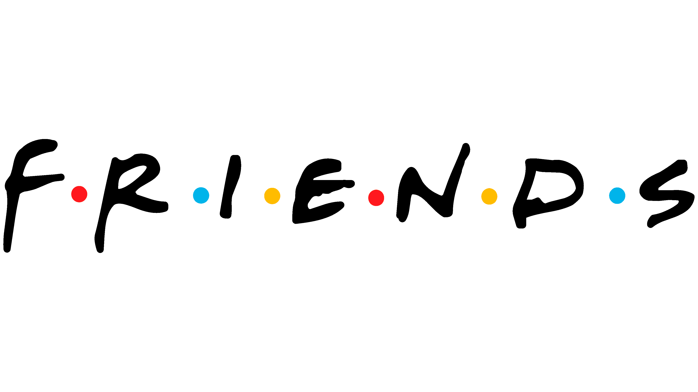

Friends
La serie que marcó una generación. En este sitio podrás conocer a los personajes, explorar sus momentos más divertidos, y mucho más.
¿Qué es Friends?
Friends es una serie de televisión estadounidense que se estrenó en 1994 y se emitió durante 10 temporadas hasta 2004. La serie sigue la vida de seis amigos que viven en Nueva York: Rachel, Monica, Phoebe, Chandler, Joey y Ross. A lo largo de la serie, los personajes enfrentan retos relacionados con el amor, las amistades y las carreras profesionales, mientras mantienen una relación cercana y divertida entre ellos.
Importancia cultural
Friends se ha convertido en un fenómeno cultural, siendo una de las series más populares y queridas de todos los tiempos. A lo largo de los años, su influencia en la cultura pop ha sido enorme, desde sus icónicas frases hasta sus momentos que siguen siendo referenciados y recreados hoy en día.
Trama principal
La trama se centra en seis amigos que, a pesar de sus diferencias, comparten un lazo inquebrantable. A través de las 10 temporadas, se desarrollan varias tramas sobre sus relaciones amorosas, personales y profesionales, además de eventos significativos como matrimonios, nacimientos y otros cambios importantes en sus vidas.
Personajes Principales
Rachel Green
Desde una joven superficial hasta una mujer independiente y exitosa en el mundo de la moda.
Monica Geller
La perfeccionista chef que siempre busca el control en su vida.
Phoebe Buffay
La excéntrica músico que siempre tiene una forma única de ver el mundo.
Chandler Bing
Con su humor sarcástico, Chandler se convierte en el alma de la amistad.
Joey Tribbiani
El simpático y algo torpe actor con una gran personalidad.
Ross Geller
El amigo romático y científico.
Episodios
Los mejores episodios
- The One with the Embryos (Temporada 4, Episodio 12)
- The Last One (Temporada 10, Episodio 17)
- The One Where Everybody Finds Out (Temporada 5, Episodio 14)
- The One with the Prom Video (Temporada 2, Episodio 14)
- The One with the Proposal (Temporada 6, Episodio 25)
Citas memorables de los personajes
Friends es famosa por sus citas divertidas y conmovedoras. Algunas de las más icónicas incluyen:
- "We were on a break!" (Ross)
- "How you doin'?" (Joey)
- "Could I BE any more...?" (Chandler)
- "I KNOW!" (Monica)
- "Smelly cat, smelly cat, what are they feeding you?" (Phoebe)
Frases más divertidas de la serie
Algunas frases que se han convertido en memes o chistes recurrentes:
- Chandler: “I’m not great at the advice. Can I interest you in a sarcastic comment?”
- Joey: “Joey doesn’t share food!”
- Ross: “Pivot!” (al intentar mover un sofá).
Friends en la actualidad
El legado de Friends
Friends sigue siendo una serie querida por millones de fanáticos en todo el mundo, y su legado perdura en la cultura popular. Sin embargo, la serie también ha estado marcada por la pérdida de uno de sus miembros más queridos. En octubre de 2023, el actor Matthew Perry, quien interpretó a Chandler Bing, falleció trágicamente a los 54 años. Su muerte conmocionó a la comunidad de fanáticos de Friends y a la industria del entretenimiento.
Matthew Perry no solo fue una parte fundamental de la magia de Friends, sino que también dejó un impacto duradero como un actor y comediante excepcional. A lo largo de los años, su interpretación de Chandler se ganó el cariño de los fans por su humor sarcástico y su sensibilidad. A pesar de sus propios desafíos personales, Perry fue un defensor del bienestar mental y se dedicó a ayudar a otras personas que luchan con problemas de adicción.
El legado de Perry sigue vivo a través de su interpretación de Chandler Bing, un personaje que sigue siendo uno de los más icónicos en la historia de la televisión. La serie continuará siendo un homenaje a su talento, y su muerte ha dejado una huella en todos los que lo admiraron, tanto dentro como fuera de la pantalla.
Matthew Perry
1969 - 2023
La Reunión de Friends
El especial de HBO Max: "Friends: The Reunion"
En 2021, los seis actores principales se reunieron para un especial de HBO Max donde recordaron los momentos más emblemáticos de la serie y discutieron el impacto que tuvo en sus vidas. No fue un episodio nuevo, sino una conversación entre los miembros del elenco sobre su experiencia durante los 10 años de filmación.
En el especial, los actores revivieron viejos recuerdos, recorrieron los sets originales y realizaron lecturas de guion de algunos de los momentos más queridos de la serie. Además, muchos de los actores invitados que hicieron cameos en Friends también estuvieron presentes.
"Friends: The Reunion"
2021
Productos Oficiales
Desde tazas y camisetas hasta rompecabezas y muebles inspirados en la serie, el merchandising de Friends es muy popular. Los fanáticos pueden encontrar productos oficiales que hacen referencia a los momentos más icónicos de la serie.
Existen numerosas tiendas en línea que ofrecen productos relacionados con Friends, como tiendas especializadas en productos de cultura pop o en plataformas como Etsy, donde los fanáticos pueden encontrar artículos únicos.